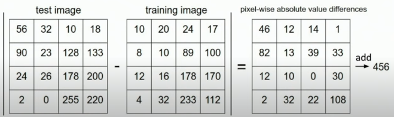
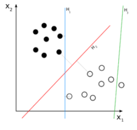
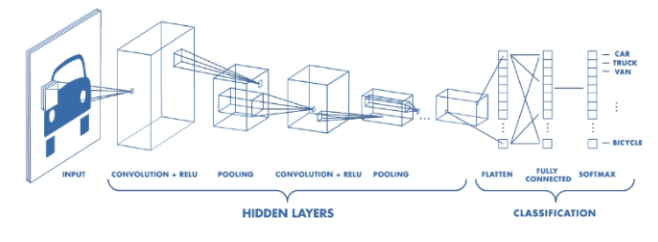

- Viewpoint variation (looking from the top down, head on, from behind etc.), as the pixel values would change.
- Obstruction (part of the image is obstructed, but the object is still there.
- Interclass Variation (Different types of a class of objects, ex. Different types of cats)
- Background clutter (Some animals blend into their background, can be harder to detect as the pixel values are similar)
- Deformation (same object, different form)
Uses for image classification: [6]
- Classifying galaxies
- Finding cancer within patients (scans, etc)
- Medical imaging
- Self driving cars (finding pedestrians, other cars, stop lights, etc).
- Camera focus (finding the person to focus on).
- And many more!
Nearest Neighbour method:
This is one way to classify images. We take in a training set of images (of your choosing, must be large enough and good enough. Good datasets include the CIFAR100 and IMAGENET) and take in the data to memory. This algorithm is very simple - it takes the test image, subtracts the pixel-wise value to the training image, and adds the absolute value of the difference as seen below.

*credit to Justin Johnson and the University of Michigan
This is done to all of the training images, and the image with the smallest pixel wise absolute value difference is selected as the classifier.
A slightly more advanced version of this is the kNN algorithm (k nearest neighbours), with k being the numbers of nearest neighbours you want to consider. So, instead of only taking the closest image in terms of pixel values, you consider ‘k’ training images that have the nearest pixel values when you make your decision. This helps smoothen out outliers in your training data. [6]

*credit to Justin Johnson and the University of Michigan
Linear Classifiers:
At the base level, linear classifiers set a direct decision boundary between two different objects. To do this, they use neural networks, which have their decision adjusted by parameters and weights which are specified by the creator of the algorithm. [7]
Visual example of a linear classifier:
Convolutional Neural Networks (CNN)
CNN’s are the most popular form of machine learning used in computer vision. When used correctly, they can perform the classification of images even better than humans can. A typical CNN architecture is as follows:

CNN’s are complex systems that allow for incredibly accurate predictions given enough test data. When looking for the most accurate computer vision systems possible, CNN’s are the way to go. [1] [8]
Copyright Ⓒ 2021 Bartek Kowalski.